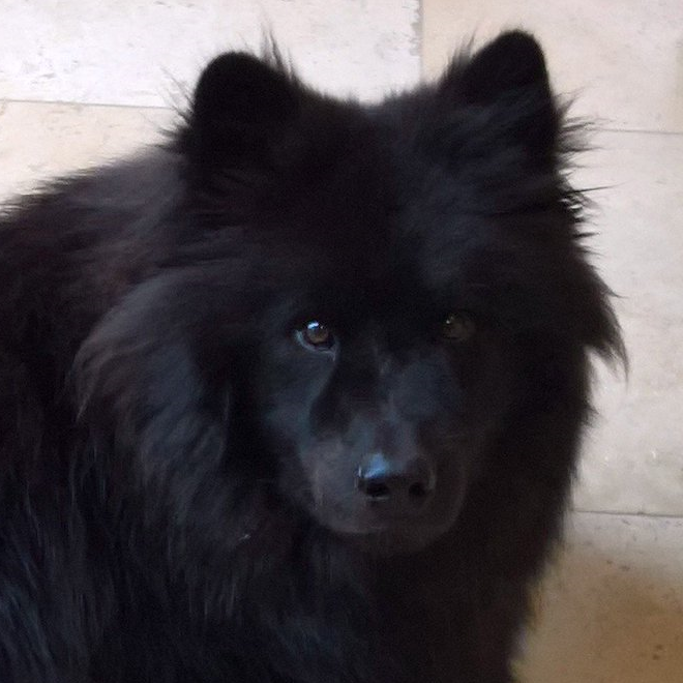

Introducing the all in one web application
that acts as a data dictionary and data mapping tool
Our client has a database system which is fairly complicated and not thoroughly documented. Our goal is to provide software which allows them to construct documentation for a specific version, then provide mapping between separate versions and other systems.
Key Features
Maple will provide the ability to add and edit data dictionaries
The user will be able to define data models for a data dictionary that they are editing
The system will provide the ability to extract data and load data models
The user will be able to easily map data
The system will provide the ability to handle system versioning
The system will have an easy to use user inteface in order to carry out required tasks
The Team
Matt Policane
I am a second year Computer Scientist studying at UCL. I am interested in software development and enjoy learning new things in that field of Computer Science. Last year, I worked on building a “tamagotchi” style game for the UCL Department of Neurology which was built in the Unity Game Engine. This project taught me how to work well and efficiently in a team and how to develop a good relationship with a client. For this project, I am the Team Leader and Client Liaison and will use the skills I learned last year to make sure the project runs smoothly.
Pius Jude
I am a second year Computer Science student at UCL. I enjoy playing and watching sports like football, cricket and badminton in my free time. I am very interested in data analysis and software development. Last year, as part of my group project, I developed an informative IOS and Android app about Tuberculosis for University College London Hospital. For this project, I have been assigned the roles of deputy leader and chief researcher. I want to use this project as an opportunity to implement and expand my knowledge about databases and at the same time develop my skills as a researcher and developer.
Pierce Grannell
I'm a second-year Computer Science student studying at UCL. In my spare time, I work on video games and sprite art, and look after my brother's dog (pictured, a good boy). I'm trying my best, bringing my eye for detail and my sense for visual design into the project. Last year, I was good at cleaning up code and writing descriptions and information, and I'm bringing that forward with me.